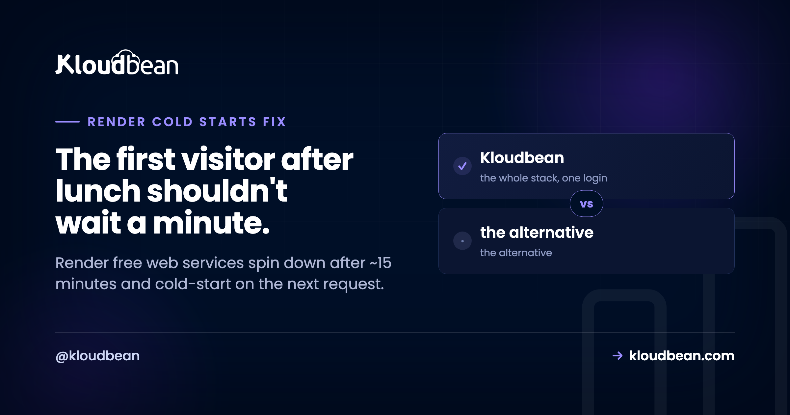

Render Cold Starts: Why Your Free Service Sleeps (and How to Fix It)

If your Render app feels fast for you and slow for the first visitor of the morning, you've met the Render cold start. On Render's free tier, a web service spins down after a stretch of no traffic and has to boot again on the next request, which is why that first load hangs. It's the single most common complaint about the free plan. Here's exactly why it happens, what it quietly costs you, and the honest fixes, from a keep-warm hack to simply running always-on.
Render's free web services spin down after about 15 minutes without traffic and take roughly a minute to start on the next request; paid instances don't spin down. So the fixes are: upgrade to a paid always-on instance, keep it warm with a scheduled ping (a band-aid that burns resources and doesn't help true first-time visitors), or move to a host that's always-on by default. For anything customer-facing, always-on is the real answer, not a workaround.
Why your Render service sleeps
It's a documented behavior, not a bug. Render's free web services are designed to spin down after roughly 15 minutes without inbound traffic to save resources. When the next request finally arrives, the service has to cold-start, and per Render's own docs that takes around a minute, during which the visitor sees a loading state or a slow response. Paid instance types don't spin down, so in practice the free tier's sleep is the platform nudging you toward a paid plan once the app matters.
For a throwaway demo, that's a fair trade. The trouble is that plenty of real things run on free services: a portfolio, a webhook receiver, a low-traffic internal tool, a side project that occasionally gets a visitor. All of them hit the cold start exactly when someone finally shows up, which is the worst possible moment.
What a cold start actually costs you
It's easy to shrug at "one slow request." The cost is bigger than it looks:
- First impressions. The first visitor after an idle period, often a potential customer or someone you sent the link to, waits the longest. That's the one load you'd most want to be fast.
- Webhooks and integrations. A payment provider or a third-party service firing a webhook at a sleeping endpoint can time out or retry, and some don't retry kindly.
- Cron and scheduled work. A low-traffic job endpoint may be asleep exactly when it's pinged.
- SEO and uptime checks. A crawler or monitor hitting a cold service records a slow or failed response, which is not the signal you want.
None of this shows up while you're actively developing, because your own traffic keeps the service warm. It appears in production, for other people, which is why it's so often reported as "it works for me but users say it's slow."
The fixes, honestly
There are three real options, and they're not equal.
1. Pay for an always-on instance. The straightforward fix: a paid Render instance doesn't spin down. This works, and it's the honest cost of running something real. Just know that "free" was never quite the plan for production; the sleep is what makes you upgrade.
2. Keep it warm with a scheduled ping. A cron job or uptime monitor that hits your service every few minutes can stop it sleeping. It's popular, and it's a band-aid, covered below.
3. Run on a host that's always-on by default. If the app is past the demo stage, the cleanest answer is a server that simply doesn't sleep, on a predictable plan, so cold starts stop being a thing you manage at all.
Keep-warm pings: a band-aid, not a fix
The keep-warm trick is to ping your own service on a schedule so it never idles long enough to spin down. It sometimes helps, but be clear-eyed about it:
- It keeps the service busy 24/7, which on a usage-billed platform means you're paying to prevent sleep anyway.
- It doesn't help the genuine first-ever visitor, or a visit right after a deploy, or any window the ping misses.
- It's one more moving part (an external cron or monitor) that can fail silently, and then the sleep is back without warning.
My honest take: if you're already running a scheduler just to keep a server awake, you've built a worse, flakier version of always-on hosting. At that point, paying for always-on, on Render or elsewhere, is simpler and more reliable.
The always-on alternative
The reason cold starts exist is scale-to-zero: the platform saves money by letting your app sleep. Flip that and the whole category of problem disappears. On Kloudbean your Node app runs always-on on a real server under PM2, so it's warm for every request, the first one included. There's no spin-down, no keep-warm cron to babysit, and the price is flat from $8/mo rather than a meter that punishes you for staying awake. Your managed database sits in the same dashboard, and deploys come from a GitHub push.
The fair boundary: if your project genuinely idles almost all the time and you truly don't mind the first visitor waiting, a free tier's scale-to-zero saves you money and that's a legitimate choice. Always-on is the answer specifically when the app is real and the cold start is costing you something.
| Approach | Cold start? | Cost shape | Effort |
|---|---|---|---|
| Render free tier | Yes (~15 min idle) | Free | None, but slow first request |
| Render paid instance | No | Paid, doesn't spin down | Low |
| Keep-warm ping | Mostly hidden | Pays for 24/7 anyway | Ongoing, can fail |
| Always-on host (Kloudbean) | No | Flat from $8/mo | Low, warm by default |

render Cold Starts alongside everything else
Cold starts are one reason teams outgrow a free tier. For the fuller picture, Render vs Railway vs Kloudbean compares the models, and where to deploy a Node.js app covers every option. If a free database is also on your mind, note that Render's free Postgres is time-limited; the hands-on move is in deploy a Node app to a managed cloud, and uptime checks live in uptime monitoring.
Ship the app, not the infrastructure.
Pick from seven clouds, run your app on a managed server you control, and keep databases, storage, and deploys in the same dashboard instead of four separate vendors.
- ✓ Seven cloud providers
- ✓ Managed databases
- ✓ Object storage
- ✓ Automatic backups
- ✓ Free SSL
- ✓ Git deploy
- ✓ Free migration assistance
FAQ
Why does my Render app take so long to load the first time?
Because a free Render web service spins down after about 15 minutes without traffic, and the next request has to wake it, which takes roughly a minute per Render's docs. Your own testing keeps it warm, so you rarely see it, but the first real visitor after an idle stretch does. Paid instances don't spin down.
How do I stop a Render service from sleeping?
The supported way is to run a paid instance, which doesn't spin down. Some people keep a free service awake with a scheduled ping every few minutes, but that keeps it busy around the clock and still misses the true first visit. For a customer-facing app, an always-on host is the cleaner fix.
Do keep-warm cron pings actually work?
Partly. A ping can prevent idle spin-down, but it doesn't help the genuine first visitor or a request right after a deploy, it keeps the service running 24/7 (which you pay for on usage-billed plans), and it's an external dependency that can fail quietly. It's a band-aid, not a real fix.
Does Render's paid tier have cold starts?
No. Per Render's documentation, paid instance types don't spin down for inactivity, so they stay warm. The cold-start behavior is specific to the free web service tier. So the Render-native answer to always-on is a paid instance type rather than a keep-warm trick.
Is a keep-warm ping cheaper than always-on hosting?
Usually not, once you account for it honestly. Keeping a service pinged means it runs continuously, so on a metered plan you pay for that time anyway, plus you maintain the pinger. A flat always-on plan (Kloudbean starts at $8/mo) is often simpler and more predictable than engineering around sleep.
What's the best always-on host for a Node.js app?
Any host that runs your app on a persistent server rather than scaling to zero. On Kloudbean the Node app runs always-on under PM2, deploys from GitHub, and sits next to a managed database on a flat plan, so there's no spin-down to work around. Compare current pricing, but for always-on the model matters more than the sticker.